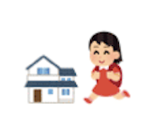
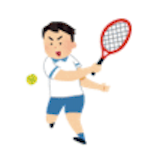
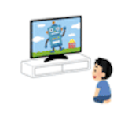
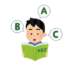
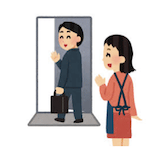

Day 7 - Vocabulary
おぼえましょう (oboemashou) - Let's remember
Day 7 Vocabulary
Image-based vocabulary cards with hosted audio. The original PDF and Google Drive resources remain below.
たんじょうび (tanjoobi) - birthday
おないどし (onaidoshi) - the same age
にほん (nihon) - Japan
きます (kimasu) - to come
くに (kuni) - country

かえります (kaerimasu) - to return (home)
ごはん (gohan) - meal (dinner in this lesson)
たべます (tabemasu) - to eat

テニス (tenisu) - tennis
えいが (eega) - movie

みます (mimasu) - to watch
テスト (testo) - test

えいご (eego) - English
はなみ (hanami) - flower viewing
Day 7 Vocabulary Flashcards
ことば（言葉） (kotoba) - words
Day 7 Extra Words
Supplemental vocabulary from the Day 7 sheet, using local audio and reusing earlier lesson audio when the same word already exists.
Some repeated words reuse earlier cutout images and audio when the Day 7 cutout or audio folder intentionally omits them.
らいねん (rainen) - next year
きょうと (kyooto) - Kyoto
らいしゅう (raishuu) - next week
こんばん (konban) - this evening
こんど (kondo) - this time
します (shimasu) - to do
はるやすみ (haruyasumi) - spring vacation
しゅうまつ (syuumatsu) - weekend
しんじゅく (shinjuku) - Shinjuku (Tokyo district)

いきます (ikimasu) - to go
Day 7 Extra Words Flashcards
【おいくつですか。（なんさいですか。）】 (Oikutsu desu ka? (Nansai desu ka?)) - How old are you?
Day 7 Age
Age words from the Day 7 sheet.
The original export did not include the individual age clips, so these pronunciations were generated locally with the macOS Japanese voice.
いっさい (issai) - 1 year old
にさい (nisai) - 2 years old
さんさい (sansai) - 3 years old
よんさい (yonsai) - 4 years old
ごさい (gosai) - 5 years old
ろくさい (rokusai) - 6 years old
ななさい (nanasai) - 7 years old
はっさい (hassai) - 8 years old
きゅうさい (kyuusai) - 9 years old
じゅっさい (jussai) - 10 years old
はたち (hatachi) - 20 years old
にじゅうにさい (nijuunisai) - 22 years old
さんじゅうさんさい (sanjuusansai) - 33 years old
よんじゅうよんさい (yonjuuyonsai) - 44 years old
ごじゅうごさい (gojuugosai) - 55 years old
ろくじゅうろくさい (rokujuurokusai) - 66 years old
ななじゅうななさい (nanajuunanasai) - 77 years old
はちじゅうはっさい (hachijuuhassai) - 88 years old
きゅうじゅうきゅうさい (kyuujuukyuusai) - 99 years old
ひゃくさい (hyakusai) - 100 years old
Day 7 Age Flashcards
Day 7 Age Example
Special reading and model sentence from the Day 7 sheet.
20さい is read as はたち.
20さい = はたち (hatachi) - 20 years old
わたしは はたち です。 (watashi wa hatachi desu.) - I am 20 years old.
日付 (hizuke) - Date
Day 7 Date Example
Example sentence from the Day 7 sheet showing how to say a full date.
きょうは 2020ねん 4がつ 21にち かようび です。 (kyou wa nisen nijuu nen shigatsu nijuuichi nichi kayoubi desu.) - Today is Tuesday, 21st of April 2020.
【なんがつ？】 (nan-gatsu?) - What month?
Day 7 Months
Month names from the Day 7 date sheet.
The original export did not include the month clips, so these pronunciations were generated locally with the macOS Japanese voice.
いちがつ (ichi-gatsu) - January
にがつ (ni-gatsu) - February
さんがつ (san-gatsu) - March
しがつ (shi-gatsu) - April
ごがつ (go-gatsu) - May
ろくがつ (roku-gatsu) - June
しちがつ (shichi-gatsu) - July
はちがつ (hachi-gatsu) - August
くがつ (ku-gatsu) - September
じゅうがつ (juu-gatsu) - October
じゅういちがつ (juuichi-gatsu) - November
じゅうにがつ (juuni-gatsu) - December
Day 7 Months Flashcards
【なんにち？】 (nan-nichi?) - What day of the month?
Day 7 Days of the Month
Day-of-the-month readings from the Day 7 date sheet.
The original export did not include the date clips, so these pronunciations were generated locally with the macOS Japanese voice.
ついたち (tsuitachi) - 1st
ふつか (futsuka) - 2nd
みっか (mikka) - 3rd
よっか (yokka) - 4th
いつか (itsuka) - 5th
むいか (muika) - 6th
なのか (nanoka) - 7th
ようか (yooka) - 8th
ここのか (kokonoka) - 9th
とおか (tooka) - 10th
じゅういちにち (juuichi-nichi) - 11th
じゅうににち (juuni-nichi) - 12th
じゅうさんにち (juusan-nichi) - 13th
じゅうよっか (juuyokka) - 14th
じゅうごにち (juugo-nichi) - 15th
じゅうろくにち (juuroku-nichi) - 16th
じゅうしちにち (juushichi-nichi) - 17th
じゅうはちにち (juuhachi-nichi) - 18th
じゅうくにち (juukyuu-nichi) - 19th
はつか (hatsuka) - 20th
にじゅういちにち (nijuuichi-nichi) - 21st
にじゅうににち (nijuuni-nichi) - 22nd
にじゅうさんにち (nijuusan-nichi) - 23rd
にじゅうよっか (nijuuyokka) - 24th
にじゅうごにち (nijuugo-nichi) - 25th
にじゅうろくにち (nijuuroku-nichi) - 26th
にじゅうしちにち (nijuushichi-nichi) - 27th
にじゅうはちにち (nijuuhachi-nichi) - 28th
にじゅうくにち (nijuukyuu-nichi) - 29th
さんじゅうにち (sanjuu-nichi) - 30th
さんじゅういちにち (sanjuuichi-nichi) - 31st
Day 7 Dates Flashcards
A downloadable print file can be found here: Vocabulary Day 7.pdf
Audio files can be found here, so you can listen to the pronunciation and practise repeating the words!